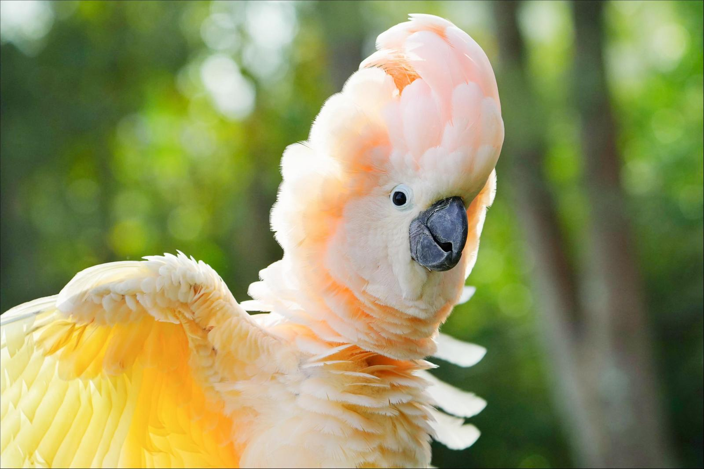

Походження
У дикій природі налічують 21 вид какаду, проте більш відомими вважаються ті, яких можна утримувати в домашніх умовах. Тому розглянемо докладніше, як виглядають ці види папуги какаду
Особистість
Какаду відноситься до папуг середнього розміру, довжина його тіла може становити від 30 до 75 см, а важить птах близько 1 кг.
Вони є довгожителі: тривалість життя може досягати 90 років в умовах неволі, що дозволяє птахові стати компаньйоном для людини на все життя.
Особливість, яка відрізняє какаду від інших папуг, стосується його зовнішності, а саме наявності гребеня на голові, який може підніматися під час стривоженості чи збудження. Незважаючи на те, що більшість папуг цінують за їх красивий і довгий хвіст, у какаду він не відрізняється красою, а має коротку довжину і закругленість до низу. Сильним і масивним дзьобом какаду користуються для розкушування великого насіння, щоб прогодувати себе в дикій природі. Але досить часто він може стати для птиці знаряддям захисту, а кусається птах сильно та болісно.
Здоров'я
Птах часто хворіє внаслідок поганого догляду чи неправильного утримання. Самостійно визначити вид хвороби у вас не вийде, тому коли з'являються якісь симптоми, що викликають підозри, слід звернутися до ветеринара. Папуга в цей час може чхати, втратити апетит, у нього звузиться очна щілина, з'являться виділення з ніздрів, він висмикуватиме у себе пір'я, різко кричати, екскременти поміняють колір та зовнішній вигляд.
Грумінг
Необхідно враховувати, що корм, який використовуватиметься для годування папуги, потрібно перевіряти на свіжість та якість. Продукти, які швидко псуються, необхідно видавати потроху кілька разів на день.
Основне харчування какаду передбачає використання сумішей із зерен, які складаються з різних сортів проса, гречки, конопляного насіння, горіхів та насіння. Можна додавати в раціон овочі та фрукти. Підгодовувати папугу рекомендується також шкаралупою з яєць для насичення організму необхідними елементами.
Для того щоб трохи побалувати свого домашнього улюбленця, можна почастувати його полуницею, малиною, грушею, яблуком, шипшиною, родзинками та бананом.
Із задоволенням птахи їдять і овочі, для цього збагатіть раціон морквою, огірком, баклажаном, червоним буряком, бобовими. Корисно також додавати в раціон трохи кореня кульбаби, селери та фенхелю.
У дикій природі папуги люблять вишукувати комах та його личинки, щоб заповнювати нестачу білкової їжі та протеїну. Для того, щоб папуга отримувала все необхідне вдома, запропонуйте йому м'ясо курки, сир, йогурт або твердий сир.